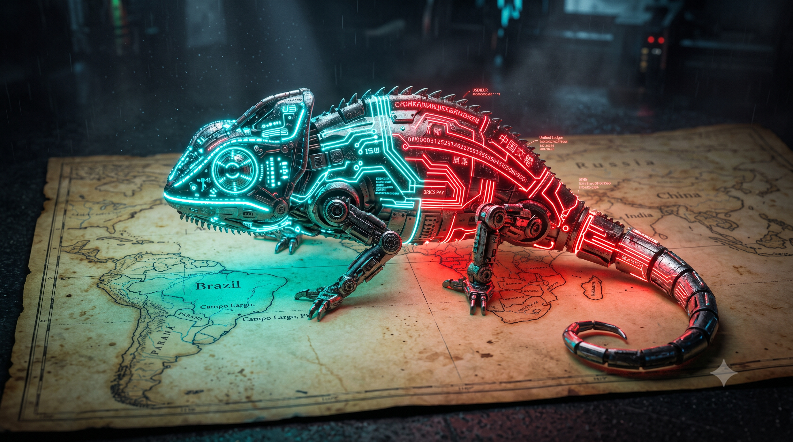

Módulo 06: Geopolítica
O DNA Camaleão e a Geopolítica (Ep. 06)

Por que esta aula importa para a sua jornada na Pós-Graduação?
Esta aula desmistifica a geopolítica financeira global que afeta o desenvolvimento do Drex (projeto brasileiro de Real Digital em plataforma programável). Entender essa complexa teia de poder prepara você para a profissão de Analista de Estratégia Cambial e Infraestrutura Financeira, ensinando como o pragmatismo geopolítico do Brasil ("DNA Camaleão") equilibra-se entre a rigidez ocidental e os novos fluxos de liquidação asiáticos, permitindo-lhe conceber arquiteturas de tesouraria de baixo risco.
O que você precisa saber antes de continuar:
- Soberania Monetária: O poder de um Estado de controlar sua própria moeda física e digital sem interferências ou bloqueios externos.
- Redes Financeiras Concorrentes: A divisão entre as redes de liquidação dominadas pelo Ocidente (como o sistema Swift) e novas infraestruturas em desenvolvimento por potências emergentes (como o BRICS Pay).
- Pragmatismo Diplomático: A postura histórica do Brasil de não escolher lados absolutos, permitindo o comércio fluido tanto com nações ocidentais quanto orientais.
A arquitetura tecnológica de um dinheiro digital soberano carrega um alinhamento político inevitável. Ao desenhar o Drex (projeto brasileiro de Real Digital em plataforma programável), o Banco Central do Brasil não tomou apenas decisões de desenvolvimento de software ou de APIs (Application Programming Interfaces - Interfaces de Programação de Aplicação) de rede: ele assinou um compromisso de governança internacional. No xadrez da geopolítica monetária global, a tecnologia transacional é a principal arma de controle de fronteiras e soberania fiscal.
O Brasil, historicamente conhecido pela sua diplomacia do "DNA Camaleão", tenta uma das maiores manobras de arbitragem geopolítica da história moderna: atuar de forma confortável e integrada ao bloco financeiro ocidental (liderado por Washington e pelo BIS (Bank for International Settlements - Banco de Compensações Internacionais)), sem comprometer sua fatia gigante de exportações comerciais de commodities para o bloco asiático (liderado por Pequim e pelos BRICS (bloco de nações de economia emergente composto originalmente por Brasil, Rússia, Índia, China e África do Sul)).
Esse posicionamento ambíguo exige adaptabilidade técnica de alta complexidade. A verdadeira pergunta que o exportador de commodities e o analista geopolítico devem fazer não é se o padrão técnico do Drex é robusto, mas: até que ponto o alinhamento técnico com as diretrizes do BIS ocidental é compatível com a necessidade de liquidar trocas bilaterais com o bloco asiático em redes alternativas como o BRICS Pay?
Tese — A Conformidade com Basileia e o Eixo Ocidental
O Banco Central brasileiro construiu as APIs (Interfaces de Programação de Aplicação) e os validadores do Drex (Real Digital brasileiro) sob estrito alinhamento às diretrizes do BIS (na Suíça) e da rede Swift (Society for Worldwide Interbank Financial Telecommunication - Sociedade para Telecomunicações Financeiras Interbancárias Mundiais) corporativa. A estratégia nacional é clara: garantir que a infraestrutura financeira do país seja aceita sem fricções regulatórias nas bolsas de valores de Nova York, Frankfurt e Londres.
Isso permite um ambiente de controle centralizado de alta eficácia:
- Integração de Capital Estrangeiro: Ao adotar o mesmo padrão técnico de livros distribuídos das economias do G7 (Grupo dos Sete - grupo que reúne as principais economias industrializadas do mundo), o Brasil facilita que fundos e seguradoras internacionais comprem títulos públicos e RWAs (Real World Assets - Ativos do Mundo Real) nacionais direto pelo celular, elevando o fluxo de investimento externo.
- Conformidade Legal Automática: O alinhamento técnico simplifica processos de conformidade com leis internacionais de prevenção à lavagem de dinheiro, blindando a moeda nacional contra sanções econômicas do bloco ocidental.
Antítese — O Peso da Rota da Seda e o BRICS Pay
Se o blueprint técnico do Drex aponta para o Ocidente, a realidade das exportações agrícolas e minerais brasileiras puxa o país fortemente na direção oposta:
1. A Dependência Agrícola e de Commodities da China
A China é o maior comprador isolado de soja, carne e minério de ferro do Brasil. O país asiático, atolado em tensões geopolíticas crescentes com os Estados Unidos, recusa-se a liquidar o comércio internacional de longo prazo puramente em Dólares ou em canais controlados pelo Swift ocidental. Pequim exige de seus parceiros de exportação a capacidade técnica de rodar liquidações em moedas locais ou redes alternativas de CBDC (Central Bank Digital Currency - Moeda Digital emitida por Banco Central), como o mBridge (projeto piloto de pagamentos transfronteiriços multilaterais envolvendo múltiplos bancos centrais) e o ecossistema BRICS Pay (sistema de pagamento digital multilateral e descentralizado desenvolvido pelos países membros do BRICS).
2. O Risco da Arma Financeira do Swift
A exclusão da Rússia da rede Swift em 2022 serviu como um alerta definitivo para as nações em desenvolvimento. O Brasil percebeu que um país pode ter suas reservas estrangeiras congeladas e ser cortado do comércio mundial da noite para o dia caso a diretriz política de Washington mude. Alinhar 100% da infraestrutura monetária interna (Drex) às travas lógicas ocidentais expõe o país ao risco de perda de soberania e vulnerabilidade cibernética externa.
3. O Caso Histórico da Embraer e a Boeing
O Brasil já aprendeu essa lição no passado com a sua indústria aeronáutica. O pragmatismo da Embraer permitiu que ela desenhasse aviões militares usando sistemas de navegação ocidentais, mas mantendo a autonomia física de integrá-los a armas e radares de nações não alinhadas. Tentar monopolizar as rotas do Drex em um único canal técnico de controle é ir contra o instinto sobrevivente da geopolítica brasileira.
Síntese — A Engenharia da Arbitragem Híbrida
A saída para o país não é escolher um lado do tabuleiro, mas sim construir uma arquitetura de rede híbrida e interoperável. O Drex deve rodar em conformidade com o BIS para atrair capital corporativo ocidental, mas o país precisa paralelamente manter plugues e oráculos (sistemas externos de integração que transmitem dados de fora da rede para dentro da blockchain) ativos na infraestrutura do BRICS Pay para garantir o escoamento de commodities para o mercado asiático.
No próximo sábado, na nossa lição de apoio, discutiremos como estruturar transações corporativas em redes financeiras concorrentes, usando lições históricas de soberania operacional.
O que você deve levar deste episódio:
- O desenho do Drex atrela a infraestrutura digital do país a diretrizes normativas do BIS, simplificando o fluxo de capitais ocidentais.
- O comércio expressivo de commodities com a Ásia e o receio de bloqueios unilaterais do Swift forçam o desenvolvimento de plugues com redes alternativas.
- O pragmatismo cambial brasileiro (DNA Camaleão) requer arquiteturas financeiras híbridas que interoperem entre polos geopolíticos divergentes.
Arbitragem Geopolítica
A prática estratégica de um país ou empresa tirar proveito de divergências regulatórias, fiscais ou de alinhamento político entre diferentes blocos internacionais (ex: Ocidente vs. BRICS) para maximizar ganhos comerciais com ambos.
BRICS Pay
Sistema de pagamentos digitais descentralizados desenvolvido pelos países do bloco para permitir a liquidação de transações em moedas locais, reduzindo a dependência da rede Swift e do Dólar americano.
Drex
A representação digital da moeda brasileira (Real Digital) emitida pelo Banco Central, operando em rede de registro distribuído para viabilizar transações com ativos tokenizados e contratos inteligentes.
Interoperabilidade Sistêmica
A capacidade de diferentes redes de moedas digitais e blockchains governamentais se comunicarem e trocarem ativos entre si de forma direta, sem a necessidade de converter a moeda por bancos intermediários.
Rede Swift
A infraestrutura global de mensagens e ordens de pagamento que conecta a maioria dos bancos tradicional no planeta, atuando sob forte regulação e governança do bloco ocidental.
🧠 Pergunta-Guia de Reflexão para a Aula:
"Se o Drex for integrado às regras regulatórias internacionais do bloco ocidental para atrair capital do G7, mas a nossa economia depender cada vez mais das compras de commodities liquidadas em yuan digital pelo BRICS Pay, até que ponto a tecnologia de uma CBDC garantirá a autonomia soberana do Brasil ou criará um cabo de guerra técnico que dividirá o próprio sistema financeiro nacional?"